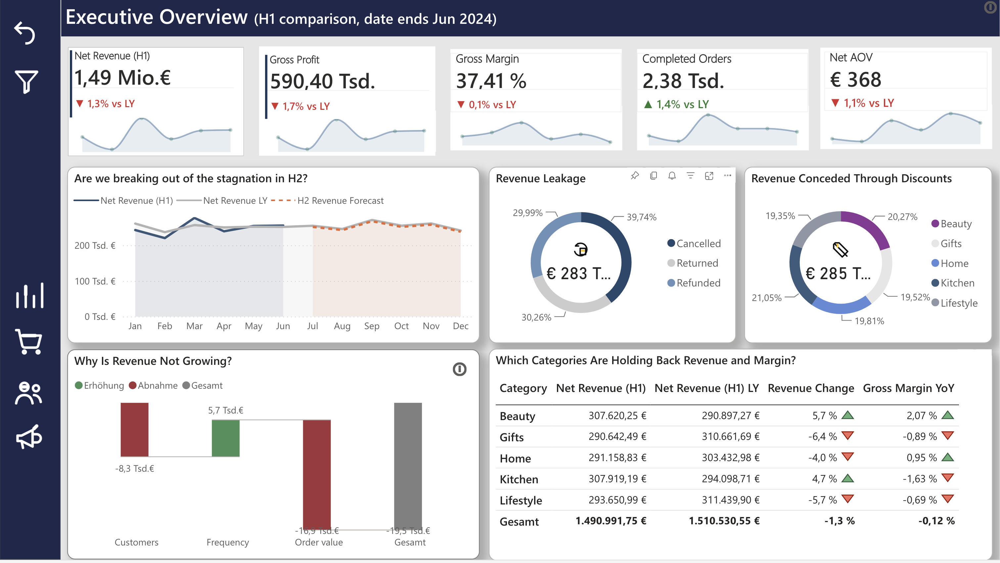
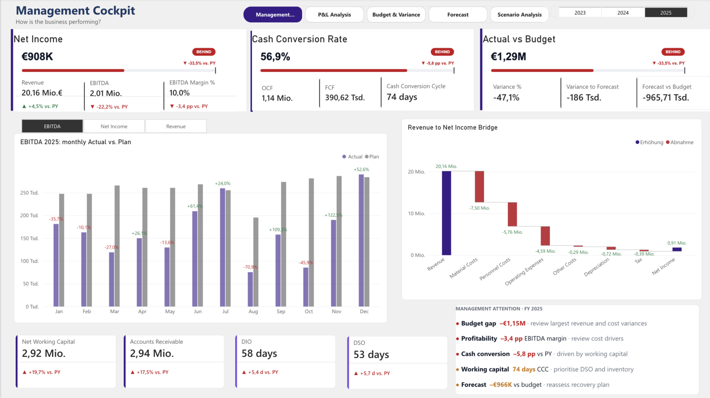
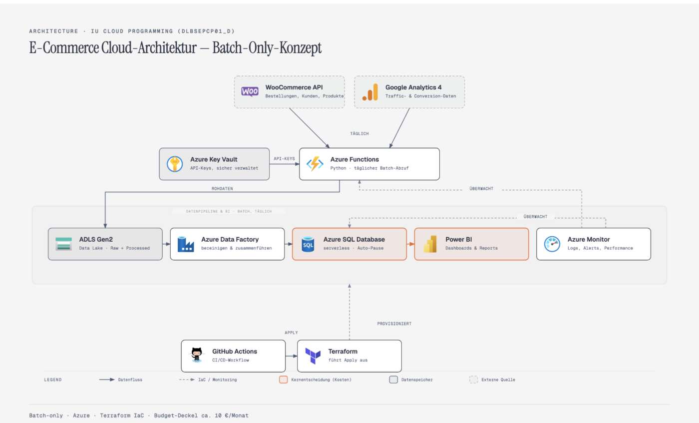
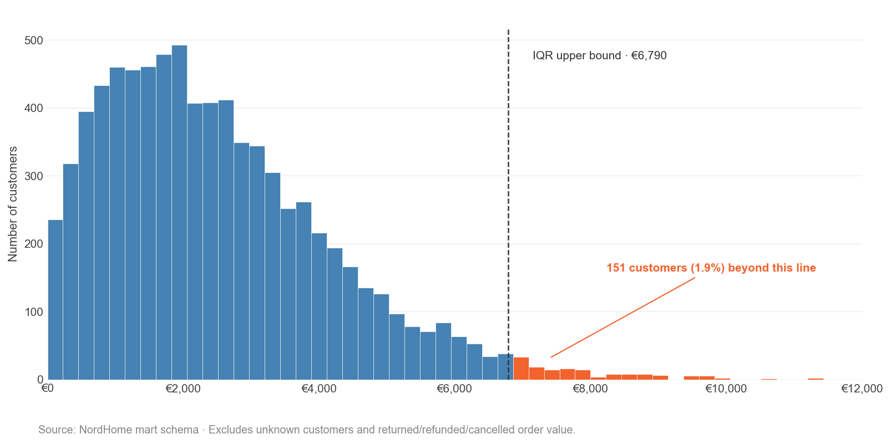
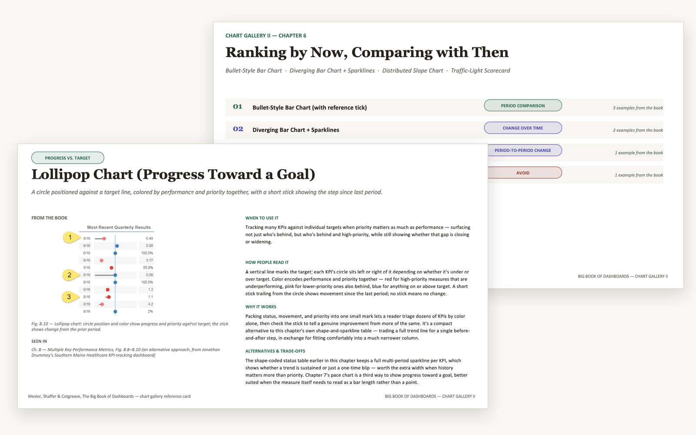
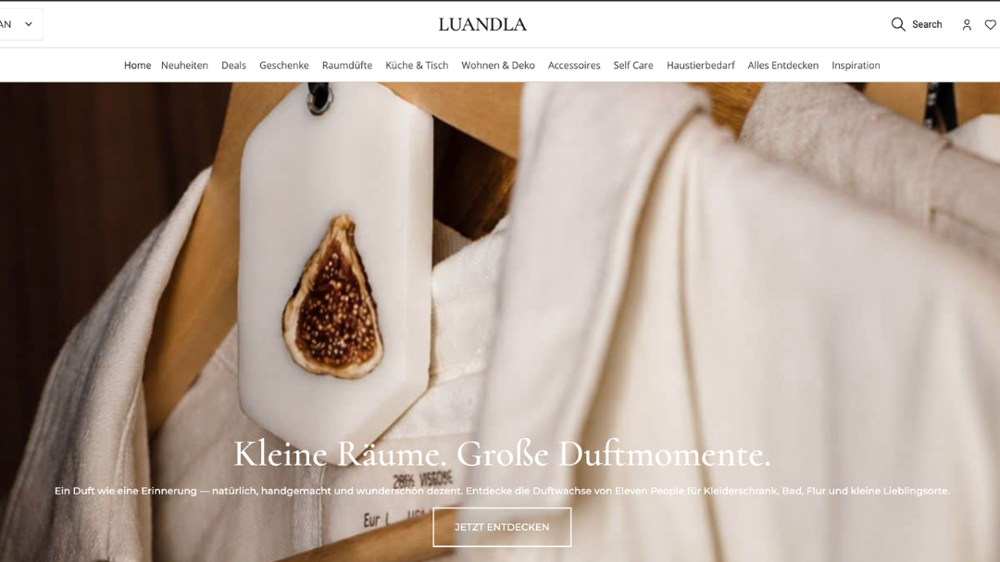

Data Analyst · Business Intelligence
From data to clarity.
From clarity to decisions.
Data is more than numbers. It shows what's happening, where problems arise and where the potential lies. I combine SQL, Python and Power BI to structure complex data, make relationships visible and turn them into business insights anyone can understand.
Selected work
Projects
Data projects

Data warehouse · ETL · BI reporting NordHome Retail AnalyticsData warehouse built on Kimball, ETL in PostgreSQL and a Power BI report for the H1 2024 review.

Power BI · Finance reporting AlpenTech Controlling – Power BI Finance ReportingFive-page controlling report: plan-vs-actual forecast, cash flow and scenario analysis for a fictional industrial B2B manufacturer.

Data engineering · Cloud pipeline Cloud Data Platform on AzureBatch pipeline: WooCommerce & GA4 pulled via API into the cloud, transformed in Azure SQL, Power BI as the endpoint.
In progress
Exploratory analysis · Retail Exploratory Data AnalysisSystematic exploration of NordHome's retail data — distributions, group comparisons, relationships and outliers.
 Data modeling · Market-basket analysis
Star Schema vs. Data Vault 2.0
Data modeling · Market-basket analysis
Star Schema vs. Data Vault 2.0
Comparing both modeling approaches on a market-basket analysis built from receipt data.

Reference collection · Data visualization Chart Gallery after "The Big Book of Dashboards"A growing reference collection: one card per chart type, with its use case and alternatives.
In progressOther projects

E-commerce · Own online shop Luandla – Online ShopCo-founded and built independently: an online shop for home fragrance, kitchen & table and living décor — from strategy and platform to SEO and analytics.
A personal knowledge system in Notion for five years of learning: applying, reflecting, connecting, teaching.
In progressToolkit
Skills
Data & Modeling
- SQL (PostgreSQL), Window Functions
- Kimball star schema, SCD type 2
- Data Vault 2.0 (theoretical)
- ETL and data quality
Analysis & BI
- Power BI, DAX, Power Query
- Python (Pandas, Jupyter)
- Exploratory data analysis
- R and Excel (fundamentals)
Communication
- Data Storytelling
- Dashboard design
- Structured reporting with the Pyramid Principle
- German and English
Currently building
- Statistics fundamentals
- Deep learning (university course)
- Cloud (Azure)
Background
About me
I've been living and building a life in Germany for around seven years and I'm studying Digital Business Administration. Before I came to data analytics, I co-founded a company called Luandla and built an online shop myself. That's where I noticed how much sits inside order, customer and product data.
Since February 2026 I've been learning data analytics systematically: from Excel through SQL, Python and Power BI to R, via online courses and my university coursework. It matters to me that I work through and actually understand my results myself — I use AI tools for support, but the first thinking stays mine.
Let's talk
Contact
I'm looking for a role as a Data Analyst or Business Analyst. I'd love to hear from you.